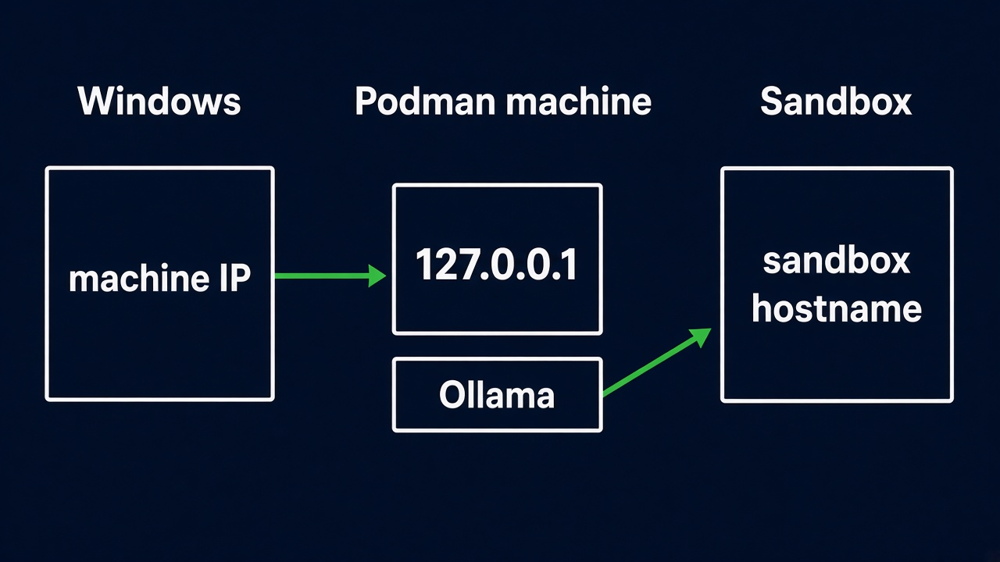

The sandbox has no network of its own. The supervisor dials Ollama.
0Quickstart
git clone https://github.com/maximilianoPizarro/hello-openshell
cd hello-openshell
make up
make gateway
make ask
make down
make up starts Ollama and pulls the model. make gateway installs OpenShell 0.1.8. make ask runs examples/ask.py in the hardened Python sandbox.
1Platforms
Platform
Podman
Host URL for Ollama
Gateway
Linux
Native
http://127.0.0.1:11434
On the host
macOS
podman machine
Published port on localhost
Inside the machine
Windows
podman machine on WSL2
localhost with mirrored networking, or machine IPv4 with NAT
Inside the machine
scripts/ollama-url.sh prints the host URL. The sandbox always uses host.openshell.internal:11434. On Windows, networkingMode=mirrored in %USERPROFILE%\.wslconfig makes localhost work from the host.

Inside the machine, 127.0.0.1:11434 answers. The sandbox name is host.openshell.internal.